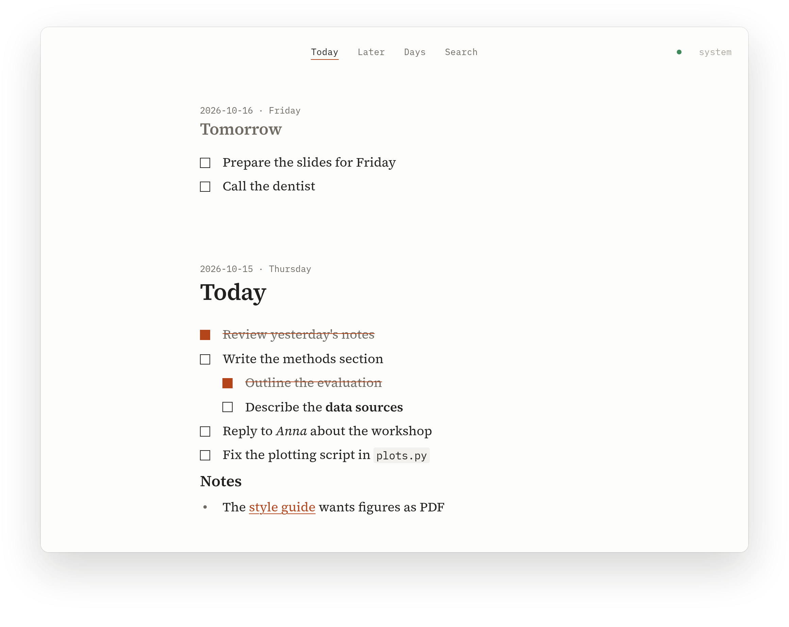

A quiet daily
todo journal
Write down the few things that matter today. Park everything else in Later. Nothing more.

Each morning, or the evening before, you write down what today is for. A short list, in one calm column, with tomorrow above and the days before below. Thoughts you want to come back to someday go into Later, so they stop circling in your head without crowding today.
What it does
Today, tomorrow, the days before
One scrolling column of days. Plan tomorrow tonight; unfinished items stay where you wrote them.
Later, for everything else
A separate list for ideas and someday tasks. No due dates, no guilt.
Markdown that stays out of the way
Checkboxes, nesting, headings, bold, links. The syntax only shows on the line you're editing.
Quick capture
One shortcut from anywhere opens a small popup. Type, press Enter, back to work.
Your files
Every day is a plain .md file on your disk. Grep it, back it up, open it in any editor.
Sync with your own server
A tiny self-hosted server keeps your devices in step, offline-first. Edits on two machines merge line by line.
Install
Download Orthros from the latest release and open it. It works on its own: no account, no server.
macOS
The .dmg (aarch64 for Apple silicon, x64 for Intel). The app isn't signed, so once after moving it to Applications:
xattr -dr com.apple.quarantine /Applications/Orthros.appLinux
.AppImage or .flatpak for any distribution, .deb for Debian and Ubuntu, .rpm for Fedora and openSUSE. With Nix:
nix run github:FreaxMATE/orthrosSync, if you want it
Start the server on a machine that's always on. It prints a token:
docker run -d --name orthros --restart unless-stopped \
-p 127.0.0.1:8787:8787 -v orthros:/data ghcr.io/freaxmate/orthros-serveror on any Linux with systemd:
curl -fsSL https://freaxmate.github.io/orthros/install-server.sh | shMake it reachable over HTTPS (for example tailscale serve), then on each device:
orthros --connect https://your-server:8444 YOUR-TOKENNixOS, Home Manager and the details: see the README.